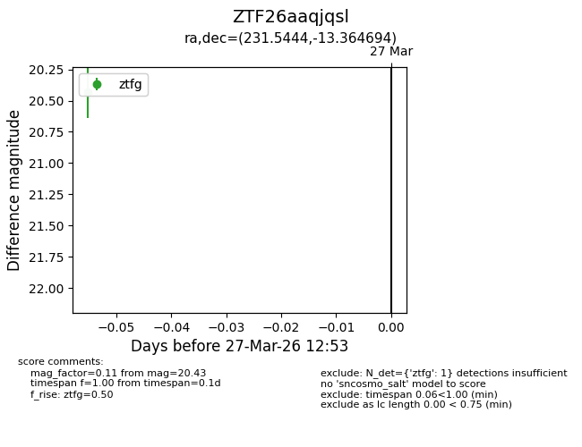
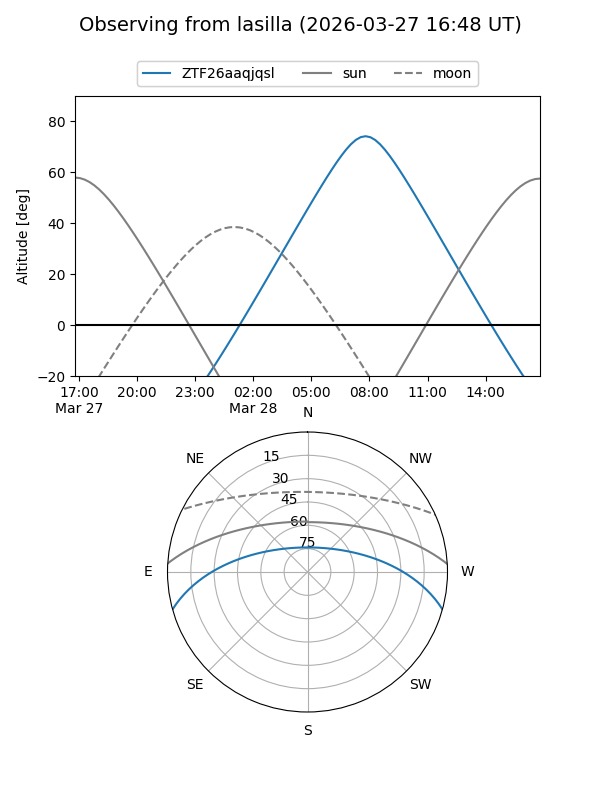
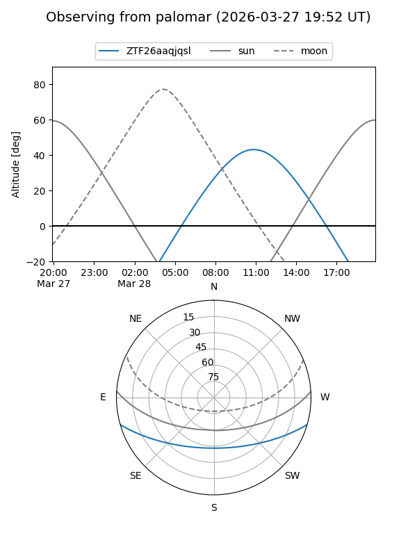
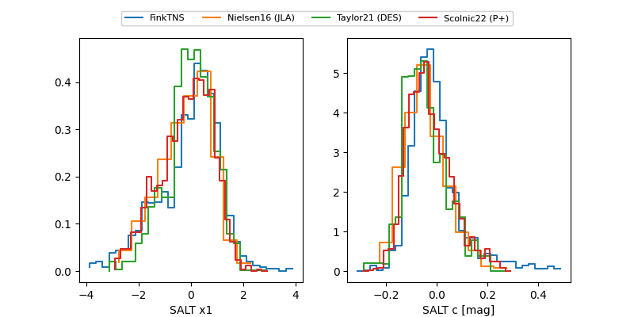

ZTF26aaqjqsl
Target ZTF26aaqjqsl at 2026-03-27 12:56
Aliases and brokers:
FINK: link
Lasair: link
ALeRCE: link
alt names
ZTF26aaqjqsl (ztf,fink_ztf)
Coordinates:
equatorial (ra, dec) = 231.5444,-13.36469
equatorial (HMS+DMS) = 15:26:10.66,-13:21:52.90
galactic (l, b) = (350.7000,+34.78551)
Flags:
Photometry:
last ztfg=20.43
1 ztfg detections
Lightcurve

Visibility


Additional plots
